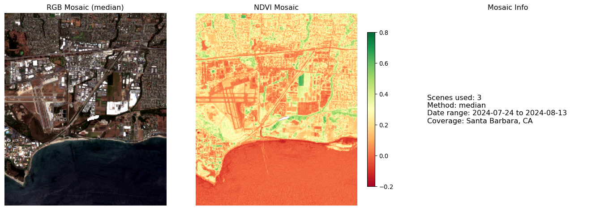
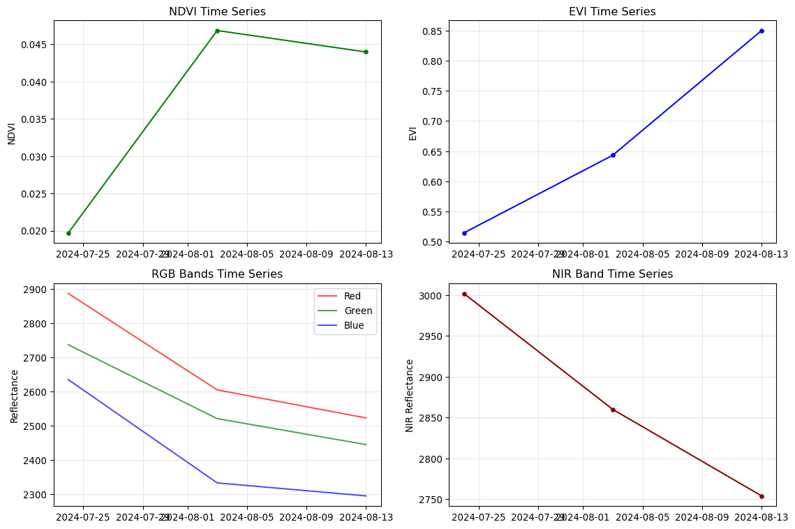

Building efficient pipelines for Sentinel-2 preprocessing
1 Introduction
This week we’ll build production-ready preprocessing pipelines that can handle multiple Sentinel-2 scenes efficiently. You’ll learn to process entire datasets, not just single scenes, with cloud masking, reprojection, and mosaicking.
Data Storage Format
This session saves data cubes in NetCDF format using the scipy engine, which is available by default in the conda environment. No additional installation is required.
Computational Requirements
Processing multiple Sentinel-2 scenes requires significant memory and storage. Each scene can be 100MB+ when loaded. Use the provided chunking parameters or reduce the number of scenes if running locally with limited resources.
Learning Goals
By the end of this session, you will:
Build reproducible preprocessing pipelines for multiple scenes
Handle cloud masking using Sentinel-2’s Scene Classification Layer
Reproject and mosaic multiple satellite scenes
Create analysis-ready data cubes with xarray
Optimize workflows with dask for large datasets
2 Session Overview
Today’s hands-on workflow:
Step
Activity
Tools
Output
1
Multi-scene data discovery
pystac-client
Scene inventory
2
Cloud masking pipeline
rasterio, numpy
Clean pixels only
3
Reprojection & mosaicking
rasterio, rioxarray
Unified grid
4
Analysis-ready data cubes
xarray, dask
Time series ready data
5
Batch processing workflow
pathlib, concurrent.futures
Scalable pipeline
3 Step 1: Multi-Scene Data Discovery
Let’s scale up from Week 1’s single scene approach to handle multiple scenes across time and space.
3.1 Define Study Area and Time Range
# Import functions from our geogfm modulefrom geogfm.c01 import ( verify_environment, setup_planetary_computer_auth, search_sentinel2_scenes, load_sentinel2_bands)# Core librariesimport warningsimport numpy as npimport pandas as pdimport xarray as xrimport rasteriofrom rasterio.warp import calculate_default_transform, reproject, Resamplingfrom rasterio.merge import mergeimport rioxarrayfrom pathlib import Pathfrom datetime import datetime, timedeltafrom pystac_client import Clientimport foliumimport matplotlib.pyplot as pltfrom concurrent.futures import ThreadPoolExecutorfrom functools import partialimport daskfrom dask.distributed import Client as DaskClientfrom typing import Dict, List, Tuple, Optional, Unionwarnings.filterwarnings('ignore')# Verify environment using our standardized functionrequired_packages = ['numpy', 'pandas', 'xarray', 'rasterio', 'rioxarray','pystac_client', 'folium', 'matplotlib', 'dask']env_status = verify_environment(required_packages)# Set up study area - Santa Barbara, California (coastal urban/natural interface)santa_barbara_bbox = [-120.2, 34.3, -119.5, 34.6] # [west, south, east, north]# Define longer time range for trend analysisstart_date ="2024-06-01"end_date ="2024-09-01"max_cloud_cover =15# More restrictive for cleaner mosaicsprint(f"Study Area: Santa Barbara, California")print(f"Time Range: {start_date} to {end_date}")print(f"Max Cloud Cover: {max_cloud_cover}%")
2025-10-09 17:56:05,970 - INFO - Analysis results exported to: /Users/kellycaylor/dev/geoAI/book/chapters/week1_output
2025-10-09 17:56:05,970 - INFO - Data exported - use load_week1_data() to reload
2025-10-09 17:56:06,886 - INFO - All 9 packages verified
Study Area: Santa Barbara, California
Time Range: 2024-06-01 to 2024-09-01
Max Cloud Cover: 15%
3.2 Search for Multiple Scenes
# Set up authentication using our standardized functionauth_status = setup_planetary_computer_auth()# Search for scenes using our enhanced search functionprint("Searching for multiple Sentinel-2 scenes...")items = search_sentinel2_scenes( bbox=santa_barbara_bbox, date_range=f"{start_date}/{end_date}", cloud_cover_max=max_cloud_cover, limit=50)print(f"Found {len(items)} scenes")# Organize scenes by date and tilescene_info = []for item in items: props = item.properties date = props['datetime'].split('T')[0] tile_id = item.id.split('_')[5] # Extract tile ID from scene name cloud_cover = props.get('eo:cloud_cover', 0) scene_info.append({'id': item.id,'date': date,'tile': tile_id,'cloud_cover': cloud_cover,'item': item })# Convert to DataFrame for easier analysisscenes_df = pd.DataFrame(scene_info)print(f"\nScene Distribution:")print(f" Unique dates: {scenes_df['date'].nunique()}")print(f" Unique tiles: {scenes_df['tile'].nunique()}")print(f" Date range: {scenes_df['date'].min()} to {scenes_df['date'].max()}")# Show scenes by tileprint(f"\nScenes by Tile:")tile_counts = scenes_df.groupby('tile').size().sort_values(ascending=False)for tile, count in tile_counts.head().items(): avg_cloud = scenes_df[scenes_df['tile'] == tile]['cloud_cover'].mean()print(f" {tile}: {count} scenes (avg cloud: {avg_cloud:.1f}%)")
2025-10-09 17:56:06,895 - INFO - Using anonymous access (basic rate limits)
Searching for multiple Sentinel-2 scenes...
2025-10-09 17:56:08,840 - INFO - Found 18 Sentinel-2 scenes (cloud cover < 15%)
Found 18 scenes
Scene Distribution:
Unique dates: 8
Unique tiles: 9
Date range: 2024-06-19 to 2024-08-23
Scenes by Tile:
20240813T224159: 4 scenes (avg cloud: 2.4%)
20240824T000559: 4 scenes (avg cloud: 0.6%)
20240819T015050: 3 scenes (avg cloud: 5.7%)
20240725T080119: 2 scenes (avg cloud: 1.6%)
20240620T022222: 1 scenes (avg cloud: 12.3%)
3.3 Visualize Scene Coverage
# Create map showing all scene footprintsm = folium.Map( location=[34.45, -119.85], # Center of Santa Barbara zoom_start=10, tiles='OpenStreetMap')# Add study area boundaryfolium.Rectangle( bounds=[[santa_barbara_bbox[1], santa_barbara_bbox[0]], [santa_barbara_bbox[3], santa_barbara_bbox[2]]], color='red', fill=False, weight=3, popup="Study Area: Santa Barbara").add_to(m)# Add scene footprints colored by datecolors = ['blue', 'green', 'orange', 'purple', 'red']unique_dates =sorted(scenes_df['date'].unique())for i, date inenumerate(unique_dates[:5]): # Show first 5 dates date_scenes = scenes_df[scenes_df['date'] == date] color = colors[i %len(colors)]for _, scene in date_scenes.iterrows(): item = scene['item'] geom = item.geometry# Add scene footprint folium.GeoJson( geom, style_function=lambda x, color=color: {'fillColor': color,'color': color,'weight': 2,'fillOpacity': 0.3 }, popup=f"Date: {date}<br>Tile: {scene['tile']}<br>Cloud: {scene['cloud_cover']:.1f}%" ).add_to(m)folium.LayerControl().add_to(m)print("Scene coverage map created")m
Scene coverage map created
Make this Notebook Trusted to load map: File -> Trust Notebook
4 Step 2: Cloud Masking Pipeline
Sentinel-2 Level 2A includes a Scene Classification Layer (SCL) that identifies clouds, cloud shadows, and other features.
4.1 Understanding Scene Classification Layer
# SCL class definitions (Sentinel-2 Level 2A)scl_classes = {0: "No Data",1: "Saturated or defective",2: "Dark area pixels",3: "Cloud shadows",4: "Vegetation",5: "Not vegetated",6: "Water",7: "Unclassified",8: "Cloud medium probability",9: "Cloud high probability",10: "Thin cirrus",11: "Snow"}# Define what we consider "good" pixels for analysisgood_pixel_classes = [4, 5, 6] # Vegetation, not vegetated, watercloud_classes = [3, 8, 9, 10] # Cloud shadows, clouds, cirrusprint("Scene Classification Layer (SCL) Classes:")for class_id, description in scl_classes.items(): marker ="✓"if class_id in good_pixel_classes else"✗"if class_id in cloud_classes else"·"print(f" {marker}{class_id}: {description}")print(f"\nGood pixels for analysis: {good_pixel_classes}")print(f"Cloud/shadow pixels to mask: {cloud_classes}")
Scene Classification Layer (SCL) Classes:
· 0: No Data
· 1: Saturated or defective
· 2: Dark area pixels
✗ 3: Cloud shadows
✓ 4: Vegetation
✓ 5: Not vegetated
✓ 6: Water
· 7: Unclassified
✗ 8: Cloud medium probability
✗ 9: Cloud high probability
✗ 10: Thin cirrus
· 11: Snow
Good pixels for analysis: [4, 5, 6]
Cloud/shadow pixels to mask: [3, 8, 9, 10]
4.2 Week 2 Function Library
The following functions will be tangled into the geogfm.c02 module, making them reusable across your projects. Each function builds on Week 1 foundations to create a complete preprocessing workflow.
4.2.1 Module Setup and Imports
"""Week 2: Advanced preprocessing functions for Sentinel-2 data."""import loggingimport numpy as npimport pandas as pdimport xarray as xrfrom typing import Dict, List, Tuple, Optional, Unionfrom pathlib import Pathfrom functools import partialfrom concurrent.futures import ThreadPoolExecutorfrom geogfm.c01 import load_sentinel2_bands, setup_planetary_computer_auth, search_sentinel2_scenes# Configure logger for minimal outputlogger = logging.getLogger(__name__)
4.2.2 Function 1: Cloud Mask Creation
This function creates a binary mask from the Scene Classification Layer, identifying which pixels are cloud-free.
def create_cloud_mask(scl_data, good_classes: List[int]) -> np.ndarray:""" Create binary cloud mask from Scene Classification Layer. Educational note: np.isin checks if each pixel value is in our 'good' list. Returns True for clear pixels, False for clouds/shadows. Args: scl_data: Scene Classification Layer data (numpy array or xarray DataArray) good_classes: List of SCL values considered valid pixels Returns: Binary mask array (True for valid pixels) """# Handle both numpy arrays and xarray DataArraysifhasattr(scl_data, 'values'): scl_values = scl_data.valueselse: scl_values = scl_datareturn np.isin(scl_values, good_classes)
4.2.3 Function 2: Apply Cloud Mask to Bands
This function applies the cloud mask to all spectral bands, handling resolution mismatches and creating analysis-ready masked data.
def apply_cloud_mask(band_data: Dict[str, Union[np.ndarray, xr.DataArray]], scl_data: Union[np.ndarray, xr.DataArray], good_pixel_classes: List[int], target_resolution: int=20) -> Tuple[Dict[str, xr.DataArray], float]:""" Apply SCL-based cloud masking to spectral bands. Args: band_data: Dictionary of band DataArrays scl_data: Scene Classification Layer DataArray good_pixel_classes: List of SCL values considered valid target_resolution: Target resolution for resampling bands Returns: masked_data: Dictionary with masked bands valid_pixel_fraction: Fraction of valid pixels """from scipy.ndimage import zoom# Get SCL data and ensure it's at target resolution scl_array = scl_dataifhasattr(scl_data, 'values'): scl_values = scl_data.valueselse: scl_values = scl_data# Create cloud mask from SCL good_pixels = create_cloud_mask(scl_data, good_pixel_classes)# Get target shape from SCL (typically 20m resolution) target_shape = scl_values.shape# Apply mask to spectral bands masked_data = {}# Map Sentinel-2 bands to readable names band_mapping = {'B04': 'red', 'B03': 'green', 'B02': 'blue', 'B08': 'nir'}for band_name in ['B04', 'B03', 'B02', 'B08']:if band_name in band_data: band_array = band_data[band_name]# Get band values (handle both numpy arrays and xarray DataArrays)ifhasattr(band_array, 'values'): band_values = band_array.valueselse: band_values = band_array# Resample band to match SCL resolution if neededif band_values.shape != target_shape:# Calculate zoom factors for each dimension zoom_factors = ( target_shape[0] / band_values.shape[0], target_shape[1] / band_values.shape[1] )# Use scipy zoom for robust resamplingtry: band_values = zoom(band_values, zoom_factors, order=1) logger.debug(f"Resampled {band_name} from {band_values.shape} to {target_shape}")exceptExceptionas e: logger.warning(f"Failed to resample {band_name}: {e}")continue# Ensure shapes match after resamplingif band_values.shape != target_shape: logger.warning(f"Shape mismatch for {band_name}: {band_values.shape} vs {target_shape}")continue# Mask invalid pixels with NaN masked_values = np.where(good_pixels, band_values, np.nan)# Use meaningful band names (red, green, blue, nir) readable_name = band_mapping[band_name]# Create DataArray with coordinates if availableifhasattr(scl_array, 'coords') andhasattr(scl_array, 'dims'): masked_data[readable_name] = xr.DataArray( masked_values, coords=scl_array.coords, dims=scl_array.dims )else:# Create with named dimensions for better compatibility dims = ['y', 'x'] iflen(masked_values.shape) ==2else ['dim_0', 'dim_1'] masked_data[readable_name] = xr.DataArray( masked_values, dims=dims )# Calculate valid pixel fraction valid_pixel_fraction = np.sum(good_pixels) / good_pixels.size# Store SCL and mask for referenceifhasattr(scl_data, 'coords') andhasattr(scl_data, 'dims'): masked_data['scl'] = scl_data masked_data['cloud_mask'] = xr.DataArray( good_pixels, coords=scl_data.coords, dims=scl_data.dims )else:# Create with named dimensions for consistency dims = ['y', 'x'] iflen(good_pixels.shape) ==2else ['dim_0', 'dim_1'] masked_data['scl'] = xr.DataArray(scl_data, dims=dims) masked_data['cloud_mask'] = xr.DataArray(good_pixels, dims=dims)return masked_data, valid_pixel_fraction
4.2.4 Function 3: Load Scene with Cloud Masking
This high-level function combines data loading and cloud masking into a single operation.
def load_scene_with_cloudmask(item, target_crs: str='EPSG:32611', target_resolution: int=20, good_pixel_classes: List[int] = [4, 5, 6], subset_bbox: Optional[List[float]] =None) -> Tuple[Optional[Dict[str, xr.DataArray]], float]:""" Load a Sentinel-2 scene with cloud masking applied using geogfm functions. Args: item: STAC item target_crs: Target coordinate reference system target_resolution: Target pixel size in meters good_pixel_classes: List of SCL values considered valid subset_bbox: Optional spatial subset as [west, south, east, north] in WGS84 Returns: masked_data: dict with masked bands valid_pixel_fraction: fraction of valid pixels """try:# Use the tested function from geogfm.c01 band_data = load_sentinel2_bands( item, bands=['B04', 'B03', 'B02', 'B08', 'SCL'], subset_bbox=subset_bbox, max_retries=3 )ifnot band_data or'SCL'notin band_data: logger.warning(f"No data or missing SCL for scene {item.id}")returnNone, 0# Apply cloud masking using SCL with target resolution masked_data, valid_fraction = apply_cloud_mask( band_data, band_data['SCL'], good_pixel_classes, target_resolution )return masked_data, valid_fractionexceptExceptionas e: logger.error(f"Error loading scene {item.id}: {str(e)}")returnNone, 0
4.2.5 Function 4: Process Single Scene
This function adds validation logic to filter out scenes with insufficient valid pixels.
def process_single_scene(item, target_crs: str='EPSG:32611', target_resolution: int=20, min_valid_fraction: float=0.3, good_pixel_classes: List[int] = [4, 5, 6], subset_bbox: Optional[List[float]] =None) -> Optional[Dict]:""" Process a single scene with validation. Args: item: STAC item target_crs: Target coordinate reference system target_resolution: Target pixel size in meters min_valid_fraction: Minimum fraction of valid pixels required good_pixel_classes: List of SCL values considered valid subset_bbox: Optional spatial subset as [west, south, east, north] in WGS84 Returns: Scene data dictionary or None if invalid """ data, valid_frac = load_scene_with_cloudmask( item, target_crs=target_crs, target_resolution=target_resolution, good_pixel_classes=good_pixel_classes, subset_bbox=subset_bbox )if data and valid_frac > min_valid_fraction:return {'id': item.id,'date': item.properties['datetime'].split('T')[0],'data': data,'valid_fraction': valid_frac,'item': item }else: logger.info(f"Skipped {item.id[:30]} (valid fraction: {valid_frac:.1%})")returnNone
4.2.6 Function 5: Batch Process Scenes
This function enables parallel processing of multiple scenes using Python’s ThreadPoolExecutor.
def process_scene_batch(scene_items: List, max_workers: int=4, target_crs: str='EPSG:32611', target_resolution: int=20, min_valid_fraction: float=0.3, good_pixel_classes: List[int] = [4, 5, 6], subset_bbox: Optional[List[float]] =None) -> List[Dict]:""" Process multiple scenes in parallel with cloud masking and reprojection. Args: scene_items: List of STAC items max_workers: Number of parallel workers target_crs: Target coordinate reference system target_resolution: Target resolution in meters min_valid_fraction: Minimum valid pixel fraction good_pixel_classes: List of SCL values considered valid subset_bbox: Optional spatial subset Returns: processed_scenes: List of processed scene data """ logger.info(f"Processing {len(scene_items)} scenes with {max_workers} workers")# Use partial to pass additional parameters process_func = partial( process_single_scene, target_crs=target_crs, target_resolution=target_resolution, min_valid_fraction=min_valid_fraction, good_pixel_classes=good_pixel_classes, subset_bbox=subset_bbox )with ThreadPoolExecutor(max_workers=max_workers) as executor: results =list(executor.map(process_func, scene_items))# Filter successful results processed_scenes = [result for result in results if result isnotNone] logger.info(f"Successfully processed {len(processed_scenes)} scenes")return processed_scenes
4.2.7 Function 6: Create Temporal Mosaic
This function combines multiple scenes into a single composite using median, mean, or max statistics.
def create_temporal_mosaic(processed_scenes, method: str='median'):""" Create a temporal mosaic from multiple processed scenes. Args: processed_scenes: List of processed scene dictionaries method: Compositing method ('median', 'mean', 'max') Returns: mosaic_data: Temporal composite as xarray Dataset """ifnot processed_scenes: logger.warning("No scenes to mosaic")returnNone# Group data by band bands = ['red', 'green', 'blue', 'nir'] band_stacks = {} dates = []# Find minimum common shape across all scenes min_shape =Nonefor scene in processed_scenes: scene_shape = scene['data']['red'].shapeif min_shape isNone: min_shape = scene_shapeelse: min_shape =tuple(min(a, b) for a, b inzip(min_shape, scene_shape))for band in bands: band_data = []for scene in processed_scenes:# Trim to common shape to handle slight size mismatches band_array = scene['data'][band]if band_array.shape != min_shape: band_array = band_array[:min_shape[0], :min_shape[1]] band_data.append(band_array)if band =='red': # Only collect dates once dates.append(scene['date'])# Stack along time dimension band_stack = xr.concat(band_data, dim='time') band_stack = band_stack.assign_coords(time=dates)# Apply temporal compositingif method =='median': band_stacks[band] = band_stack.median(dim='time', skipna=True)elif method =='mean': band_stacks[band] = band_stack.mean(dim='time', skipna=True)elif method =='max': band_stacks[band] = band_stack.max(dim='time', skipna=True)# Create mosaic dataset mosaic_data = xr.Dataset(band_stacks)# Add metadata mosaic_data.attrs['method'] = method mosaic_data.attrs['n_scenes'] =len(processed_scenes) mosaic_data.attrs['date_range'] =f"{min(dates)} to {max(dates)}" logger.info(f"Mosaic created from {len(processed_scenes)} scenes using {method}")return mosaic_data
4.2.8 Function 7: Build Temporal Data Cube
This function creates analysis-ready data cubes with time series support and vegetation indices.
def build_temporal_datacube(processed_scenes, chunk_size='auto'):""" Build an analysis-ready temporal data cube. Args: processed_scenes: List of processed scenes chunk_size: Dask chunk size for memory management Returns: datacube: xarray Dataset with time dimension """ifnot processed_scenes:returnNone# Sort scenes by date processed_scenes.sort(key=lambda x: x['date'])# Extract dates and data dates = [pd.to_datetime(scene['date']) for scene in processed_scenes] bands = ['red', 'green', 'blue', 'nir']# Find minimum common shape across all scenes min_shape =Nonefor scene in processed_scenes: scene_shape = scene['data']['red'].shapeif min_shape isNone: min_shape = scene_shapeelse: min_shape =tuple(min(a, b) for a, b inzip(min_shape, scene_shape))# Build data arrays for each band band_cubes = {}for band in bands:# Stack all scenes for this band band_data = []for scene in processed_scenes:# Trim to common shape to handle slight size mismatches band_array = scene['data'][band]if band_array.shape != min_shape: band_array = band_array[:min_shape[0], :min_shape[1]] band_data.append(band_array)# Create temporal stack band_cube = xr.concat(band_data, dim='time') band_cube = band_cube.assign_coords(time=dates)# Add chunking for large datasetsif chunk_size =='auto':# Get actual dimension names from the data dims = band_cube.dimsiflen(dims) ==3: # time, dim_0, dim_1 or time, y, x chunks = {dims[0]: 1, dims[1]: 512, dims[2]: 512}else: chunks = {}else: chunks = chunk_size# Only apply chunking if chunks are specifiedif chunks: band_cubes[band] = band_cube.chunk(chunks)else: band_cubes[band] = band_cube# Create dataset datacube = xr.Dataset(band_cubes)# Add derived indices datacube['ndvi'] = ((datacube['nir'] - datacube['red']) / (datacube['nir'] + datacube['red'] +1e-8))# Enhanced Vegetation Index (EVI) datacube['evi'] = (2.5* (datacube['nir'] - datacube['red']) / (datacube['nir'] +6* datacube['red'] -7.5* datacube['blue'] +1))# Add metadata datacube.attrs.update({'title': 'Sentinel-2 Analysis-Ready Data Cube','description': 'Cloud-masked, reprojected temporal stack','n_scenes': len(processed_scenes),'time_range': f"{dates[0].strftime('%Y-%m-%d')} to {dates[-1].strftime('%Y-%m-%d')}",'crs': str(datacube['red'].rio.crs) ifhasattr(datacube['red'], 'rio') and datacube['red'].rio.crs else'Unknown','resolution': 'Variable (depends on original scene resolution)' }) logger.info(f"Data cube created: {datacube['red'].shape}, {len(dates)} time steps")return datacube
4.2.9 Class: Sentinel2Preprocessor
This class provides a complete preprocessing pipeline with scene search, processing, and data cube creation capabilities.
class Sentinel2Preprocessor:""" Scalable Sentinel-2 preprocessing pipeline using geogfm functions. """def__init__(self, output_dir: str="preprocessed_data", target_crs: str='EPSG:32611', target_resolution: int=20, max_cloud_cover: float=15, good_pixel_classes: List[int] = [4, 5, 6]):self.output_dir = Path(output_dir)self.output_dir.mkdir(exist_ok=True)self.target_crs = target_crsself.target_resolution = target_resolutionself.max_cloud_cover = max_cloud_coverself.good_pixel_classes = good_pixel_classes# Set up authentication once during initialization setup_planetary_computer_auth()def search_scenes(self, bbox: List[float], start_date: str, end_date: str, limit: int=100) -> List:"""Search for Sentinel-2 scenes using geogfm standardized function."""# Ensure authentication is set up setup_planetary_computer_auth()# Use our standardized search function date_range =f"{start_date}/{end_date}" items = search_sentinel2_scenes( bbox=bbox, date_range=date_range, cloud_cover_max=self.max_cloud_cover, limit=limit ) logger.info(f"Found {len(items)} scenes")return itemsdef process_scene(self, item, save_individual: bool=True, subset_bbox: Optional[List[float]] =None) -> Optional[Dict]:"""Process a single scene with cloud masking using geogfm functions.""" scene_id = item.id output_path =self.output_dir /f"{scene_id}_processed.nc"# Skip if already processedif output_path.exists():if save_individual:returnstr(output_path)else:# Load existing data for in-memory processingreturn xr.open_dataset(output_path)# Process scene using our enhanced function data, valid_frac = load_scene_with_cloudmask( item, self.target_crs, self.target_resolution, self.good_pixel_classes, subset_bbox )if data and valid_frac >0.3:if save_individual:try:# Convert to xarray Dataset scene_ds = xr.Dataset(data) scene_ds.attrs.update({'scene_id': scene_id,'date': item.properties['datetime'].split('T')[0],'cloud_cover': item.properties.get('eo:cloud_cover', 0),'valid_pixel_fraction': valid_frac,'processing_crs': self.target_crs,'processing_resolution': self.target_resolution })# Save to NetCDF using scipy engine (no netcdf4 required) scene_ds.to_netcdf(output_path, engine='scipy')exceptExceptionas e: logger.error(f"Save error for {scene_id}: {str(e)[:50]}")return dataelse: logger.info(f"Skipped {scene_id} (valid fraction: {valid_frac:.1%})")returnNonedef create_time_series_cube(self, processed_data_list, cube_name: str="datacube"):"""Create and save temporal data cube."""ifnot processed_data_list: logger.warning("No data to create cube")returnNone cube_path =self.output_dir /f"{cube_name}.nc"# Build temporal stack dates = [] band_stacks = {band: [] for band in ['red', 'green', 'blue', 'nir']}for data in processed_data_list:if data:# Handle dictionary format, string file path, or xarray Datasetifisinstance(data, dict):# Dictionary format from fresh processingfor band in band_stacks.keys():if band in data: band_stacks[band].append(data[band])elifisinstance(data, str):# File path - load the file first loaded_ds = xr.open_dataset(data)for band in band_stacks.keys():if band in loaded_ds.data_vars: band_data = loaded_ds[band]if'time'in band_data.dims and band_data.dims['time'] >1: band_data = band_data.isel(time=0)elif'time'in band_data.dims: band_data = band_data.squeeze('time') band_stacks[band].append(band_data)else:# xarray Dataset from loaded file - extract individual bandsfor band in band_stacks.keys():if band in data.data_vars:# If the loaded data has a time dimension, select the first time slice band_data = data[band]if'time'in band_data.dims and band_data.dims['time'] >1:# Multiple time slices in saved file - take first one band_data = band_data.isel(time=0)elif'time'in band_data.dims:# Single time slice - remove time dimension band_data = band_data.squeeze('time') band_stacks[band].append(band_data)# Create dataset cube_data = {}for band, stack in band_stacks.items():if stack:# Check that all scenes have this bandiflen(stack) ==len(processed_data_list):try: cube_data[band] = xr.concat(stack, dim='time')exceptExceptionas e: logger.error(f"Failed to concatenate {band}: {e}")else: logger.warning(f"{band} missing from some scenes ({len(stack)}/{len(processed_data_list)})")if cube_data:try: datacube = xr.Dataset(cube_data)exceptExceptionas e: logger.error(f"Failed to create dataset: {e}")returnNone# Add vegetation indices datacube['ndvi'] = ((datacube['nir'] - datacube['red']) / (datacube['nir'] + datacube['red'] +1e-8))# Save cube using scipy engine (no netcdf4 required)try: datacube.to_netcdf(cube_path, engine='scipy')exceptException: zarr_path = cube_path.with_suffix('.zarr') datacube.to_zarr(zarr_path) logger.info(f"Data cube saved: {cube_path}")return datacubereturnNone
4.3 Test Cloud Masking Functions
Now let’s test our cloud masking functions with a real scene. We’ll use spatial subsetting to make processing faster and more educational.
Spatial Subsetting for Faster Processing
Processing full Sentinel-2 scenes can be slow and memory-intensive. Each full scene:
Size: ~100MB+ per scene when loaded
Dimensions: ~10,000 × 10,000 pixels at 10m resolution
Processing time: Several minutes per scene
Using spatial subsets:
Size: ~1-5MB per subset
Dimensions: ~500 × 500 to 2,000 × 2,000 pixels
Processing time: Seconds per subset
Perfect for: Learning, development, testing, and focused analysis
# Define a useful subset for demonstrationsanta_barbara_coastal = [-120.0, 34.35, -119.7, 34.5] # ~20km × 15km coastal areaprint(f"Using subset: {santa_barbara_coastal}")
Using subset: [-120.0, 34.35, -119.7, 34.5]
# Test with one scenetest_item = scenes_df.iloc[0]['item']print(f"Testing cloud masking with scene: {test_item.id}")# Define good pixel classes for this demonstrationgood_pixel_classes = [4, 5, 6] # Vegetation, not vegetated, water# Test our enhanced cloud masking function with spatial subsetmasked_data, valid_fraction = load_scene_with_cloudmask( test_item, target_crs='EPSG:32611', # UTM Zone 11N for Santa Barbara target_resolution=20, # Resample to 20m to match SCL good_pixel_classes=good_pixel_classes, subset_bbox=santa_barbara_coastal # Use subset for faster processing)if masked_data:print(f"Scene loaded successfully")print(f"Data shape: {masked_data['red'].shape}")print(f"Valid pixels: {valid_fraction:.1%}")print(f"Cloudy pixels: {1-valid_fraction:.1%}")else:print("Failed to load scene")
Testing cloud masking with scene: S2B_MSIL2A_20240813T183919_R070_T11SKU_20240813T224159
The SCL is automatically generated during Sentinel-2 Level 2A processing using machine learning algorithms trained on expert-labeled data.
Key Advantages:
Automated cloud detection: No manual threshold setting needed
Multiple cloud types: Distinguishes dense clouds, thin cirrus, and shadows
Consistent classification: Same algorithm across all Sentinel-2 scenes globally
Analysis-ready: Level 2A processing includes atmospheric correction
Production quality: Used by ESA and major data providers
Best Practice: Always use SCL for cloud masking rather than simple band thresholds, as it accounts for seasonal and geographic variations in cloud appearance.
5 Step 3: Reprojection and Mosaicking
When working with multiple scenes, we need to ensure they’re all in the same coordinate system and can be combined seamlessly.
Speed Optimization for Interactive Learning
The following cells use a very small spatial subset (~5km × 5km, ~250×250 pixels at 20m) to process in seconds instead of minutes. This allows for rapid iteration and testing during class.
For your projects: Scale up the spatial extent and number of scenes once you’ve tested your workflow with this fast subset.
5.1 Batch Process Multiple Scenes
# Select subset of scenes for processing (to manage computational load)selected_scenes = scenes_df.head(3)['item'].tolist() # Process 3 scenes for fast demo# Use even smaller spatial subset for faster demonstration# This tiny area (~5km × 5km) processes in seconds instead of minutesfast_subset = [-119.85, 34.40, -119.80, 34.45] # Tiny subset near UCSBprint(f"Processing {len(selected_scenes)} scenes with small spatial subset for speed")print(f"Subset area: ~5km × 5km around UCSB campus")processed_scenes = process_scene_batch( selected_scenes, max_workers=2, min_valid_fraction=0.1, # Lower threshold to include more scenes subset_bbox=fast_subset)# Show processing resultsif processed_scenes:print(f"\nProcessing Summary:")for scene in processed_scenes:print(f" {scene['date']}: {scene['valid_fraction']:.1%} valid pixels")
2025-10-09 17:56:55,637 - INFO - Processing 3 scenes with 2 workers
Processing 3 scenes with small spatial subset for speed
Subset area: ~5km × 5km around UCSB campus
When processing spatial subsets, scenes may have slightly different dimensions (e.g., 284×285 vs 285×284 pixels) due to coordinate transformation rounding. The mosaic functions handle this by trimming arrays to a common minimum shape. For projects requiring pixel-perfect alignment (e.g., change detection), see the Spatial Alignment Strategies guide.
2025-10-09 17:57:12,068 - INFO - Mosaic created from 3 scenes using median

Temporal mosaic visualization complete
6 Step 4: Analysis-Ready Data Cubes
Now let’s create analysis-ready data cubes that can be used for time series analysis and machine learning.
6.1 Build Temporal Data Cube
# Build the data cubedatacube = build_temporal_datacube(processed_scenes)if datacube:print(f"\nData Cube Summary:")print(datacube)
2025-10-09 17:57:12,281 - INFO - Data cube created: (3, 284, 238), 3 time steps
Data Cube Summary:
<xarray.Dataset> Size: 10MB
Dimensions: (time: 3, y: 284, x: 238)
Coordinates:
* time (time) datetime64[ns] 24B 2024-07-24 2024-08-03 2024-08-13
Dimensions without coordinates: y, x
Data variables:
red (time, y, x) float64 2MB dask.array<chunksize=(1, 284, 238), meta=np.ndarray>
green (time, y, x) float64 2MB dask.array<chunksize=(1, 284, 238), meta=np.ndarray>
blue (time, y, x) float64 2MB dask.array<chunksize=(1, 284, 238), meta=np.ndarray>
nir (time, y, x) float64 2MB dask.array<chunksize=(1, 284, 238), meta=np.ndarray>
ndvi (time, y, x) float64 2MB dask.array<chunksize=(1, 284, 238), meta=np.ndarray>
evi (time, y, x) float64 2MB dask.array<chunksize=(1, 284, 238), meta=np.ndarray>
Attributes:
title: Sentinel-2 Analysis-Ready Data Cube
description: Cloud-masked, reprojected temporal stack
n_scenes: 3
time_range: 2024-07-24 to 2024-08-13
crs: Unknown
resolution: Variable (depends on original scene resolution)
6.2 Time Series Analysis Example
if datacube:# Extract time series for a sample location# Use more robust center selection - assume the spatial dims are the last two spatial_dims = [dim for dim in datacube['red'].dims if dim !='time']iflen(spatial_dims) >=2: y_dim, x_dim = spatial_dims[0], spatial_dims[1] center_y_idx = datacube.dims[y_dim] //2 center_x_idx = datacube.dims[x_dim] //2# Extract time series at center point using integer indexing point_ts = datacube.isel({y_dim: center_y_idx, x_dim: center_x_idx})print(f"Using spatial dimensions: {y_dim}={center_y_idx}, {x_dim}={center_x_idx}")else:print("Cannot determine spatial dimensions for time series analysis") point_ts =None# Create time series plots only if we have valid point dataif point_ts isnotNone: fig, axes = plt.subplots(2, 2, figsize=(12, 8))# NDVI time series axes[0,0].plot(point_ts.time, point_ts['ndvi'], 'g-o', markersize=4) axes[0,0].set_title('NDVI Time Series') axes[0,0].set_ylabel('NDVI') axes[0,0].grid(True, alpha=0.3)# EVI time series axes[0,1].plot(point_ts.time, point_ts['evi'], 'b-o', markersize=4) axes[0,1].set_title('EVI Time Series') axes[0,1].set_ylabel('EVI') axes[0,1].grid(True, alpha=0.3)# RGB bands time series axes[1,0].plot(point_ts.time, point_ts['red'], 'r-', label='Red', alpha=0.7) axes[1,0].plot(point_ts.time, point_ts['green'], 'g-', label='Green', alpha=0.7) axes[1,0].plot(point_ts.time, point_ts['blue'], 'b-', label='Blue', alpha=0.7) axes[1,0].set_title('RGB Bands Time Series') axes[1,0].set_ylabel('Reflectance') axes[1,0].legend() axes[1,0].grid(True, alpha=0.3)# NIR time series axes[1,1].plot(point_ts.time, point_ts['nir'], 'darkred', marker='o', markersize=4) axes[1,1].set_title('NIR Band Time Series') axes[1,1].set_ylabel('NIR Reflectance') axes[1,1].grid(True, alpha=0.3) plt.tight_layout() plt.show()print("Time series analysis complete")print(f"Sample location indices: y={center_y_idx}, x={center_x_idx}")else:print("Skipping time series plots due to dimension issues")
Using spatial dimensions: y=142, x=119

Time series analysis complete
Sample location indices: y=142, x=119
7 Step 5: Scalable Batch Processing Workflow
Finally, let’s create a reproducible workflow that can handle larger datasets efficiently.
7.1 Initialize Preprocessing Pipeline
# Initialize preprocessorpreprocessor = Sentinel2Preprocessor( output_dir="week2_preprocessed", target_crs='EPSG:32611', # UTM Zone 11N for Santa Barbara target_resolution=20)print("Preprocessing pipeline ready")
2025-10-09 17:57:12,542 - INFO - Using anonymous access (basic rate limits)
Preprocessing pipeline ready
7.2 Run Complete Preprocessing Workflow
# Define workflow parameters - use tiny subset for fast demotiny_demo_subset = [-119.85, 34.40, -119.80, 34.45] # Same 5km × 5km area as previous demosworkflow_params = {'bbox': tiny_demo_subset, # Use small subset for speed'start_date': "2024-07-01",'end_date': "2024-08-15",'max_scenes': 3# Process just 2-3 scenes for fast demo}print(f"Starting preprocessing workflow...")print(f" Area: ~5km × 5km subset near UCSB")print(f" Period: {workflow_params['start_date']} to {workflow_params['end_date']}")print(f" Note: Using small subset for fast demonstration")# Search for scenesworkflow_items = preprocessor.search_scenes( workflow_params['bbox'], workflow_params['start_date'], workflow_params['end_date'], limit=workflow_params['max_scenes'])# Process scenes - limit to 2 for even faster executionprocessed_data = []for item in workflow_items[:2]: # Process just 2 for fast demo result = preprocessor.process_scene(item, save_individual=True, subset_bbox=tiny_demo_subset)if result: processed_data.append(result)# Create data cubeif processed_data: datacube = preprocessor.create_time_series_cube(processed_data, cube_name="demo_datacube")if datacube:print(f"\nWorkflow completed successfully!")print(f" Time steps: {len(datacube.time)}")print(f" Data cube shape: {datacube['red'].shape}")print(f" Variables: {list(datacube.data_vars)}")
2025-10-09 17:57:12,549 - INFO - Using anonymous access (basic rate limits)
Starting preprocessing workflow...
Area: ~5km × 5km subset near UCSB
Period: 2024-07-01 to 2024-08-15
Note: Using small subset for fast demonstration
2025-10-09 17:57:13,897 - INFO - Found 6 Sentinel-2 scenes (cloud cover < 15%)
2025-10-09 17:57:13,898 - INFO - Found 6 scenes
2025-10-09 17:57:13,981 - INFO - Data cube saved: week2_preprocessed/demo_datacube.nc
Workflow completed successfully!
Time steps: 2
Data cube shape: (2, 284, 238)
Variables: ['red', 'green', 'blue', 'nir', 'ndvi']
Excellent work! You’ve built a production-ready preprocessing pipeline for Sentinel-2 imagery.
8.1 What You Accomplished:
Multi-scene Data Discovery: Searched and organized multiple satellite scenes
Automated Cloud Masking: Used Scene Classification Layer for quality filtering
Spatial Harmonization: Reprojected and aligned multiple scenes
Temporal Compositing: Created cloud-free mosaics using median compositing
Analysis-Ready Data Cubes: Built time series datasets for analysis
Scalable Workflows: Implemented batch processing with parallel execution
8.2 Key Takeaways:
Scene Classification Layer is powerful - automates cloud/shadow detection
Reprojection is essential - ensures scenes can be combined seamlessly
Temporal compositing reduces clouds - median filtering creates cleaner datasets
Data cubes enable time series analysis - organize data for trend detection
Batch processing scales - handle large datasets efficiently
Spatial subsetting accelerates development - process small areas quickly for testing and learning
Performance Benefits of Spatial Subsetting
Without subsetting (full scenes):
Download: ~100MB+ per scene
Processing: 2-5 minutes per scene
Memory: 1-2GB RAM required
Storage: 500MB+ per processed scene
With spatial subsetting (20km × 20km):
Download: ~1-5MB per subset
Processing: 10-30 seconds per subset
Memory: 100-200MB RAM required
Storage: 10-50MB per processed subset
Perfect for: Learning, prototyping, testing algorithms, focused analysis Scale up to: Full scenes when ready for production analysis
Troubleshooting Common Issues
Low valid pixel fractions: If scenes have <30% valid pixels due to clouds:
Lower the min_valid_fraction threshold (e.g., 0.1 instead of 0.3)
Try different time periods with less cloud cover
Use larger spatial subsets to increase the chance of finding clear pixels
NetCDF file format: The code uses scipy engine for NetCDF files:
No additional installation required (scipy is in the base environment)
If scipy fails, the code automatically falls back to zarr format
Both formats work identically for loading and analysis
Memory issues: If processing fails due to memory:
Use smaller spatial subsets
Process fewer scenes at once
Reduce the number of parallel workers (max_workers=1)
8.3 Course Integration
Building on Week 1’s single-scene analysis, this week scales to production workflows essential for geospatial AI applications. Your preprocessing pipeline outputs will be the foundation for machine learning workflows.
8.4 Next Week Preview:
In Week 3: Fine-tuning Foundation Models, we’ll use your preprocessed data to train specialized models on land cover patches:
Extract training patches from your data cubes
Create labeled datasets for supervised learning
Build and train convolutional neural networks
Compare different CNN architectures
Evaluate model performance on real satellite imagery
Your preprocessing pipeline outputs will be the foundation for machine learning workflows!
---title: "Week 2: Geospatial Data Preprocessing"subtitle: "Building efficient pipelines for Sentinel-2 preprocessing"jupyter: geoaiformat: html: toc: true toc-depth: 3 code-fold: false number-sections: true---## IntroductionThis week we'll build production-ready preprocessing pipelines that can handle multiple Sentinel-2 scenes efficiently. You'll learn to process entire datasets, not just single scenes, with cloud masking, reprojection, and mosaicking.:::{.callout-note}## Data Storage FormatThis session saves data cubes in NetCDF format using the scipy engine, which is available by default in the conda environment. No additional installation is required.::::::{.callout-warning}## Computational RequirementsProcessing multiple Sentinel-2 scenes requires significant memory and storage. Each scene can be 100MB+ when loaded. Use the provided chunking parameters or reduce the number of scenes if running locally with limited resources.::::::{.callout-tip}## Learning GoalsBy the end of this session, you will:- Build reproducible preprocessing pipelines for multiple scenes- Handle cloud masking using Sentinel-2's Scene Classification Layer- Reproject and mosaic multiple satellite scenes- Create analysis-ready data cubes with xarray- Optimize workflows with dask for large datasets:::## Session OverviewToday's hands-on workflow:| Step | Activity | Tools | Output ||------|----------|-------|--------|| 1 | Multi-scene data discovery | pystac-client | Scene inventory || 2 | Cloud masking pipeline | rasterio, numpy | Clean pixels only || 3 | Reprojection & mosaicking | rasterio, rioxarray | Unified grid || 4 | Analysis-ready data cubes | xarray, dask | Time series ready data || 5 | Batch processing workflow | pathlib, concurrent.futures | Scalable pipeline |---## Step 1: Multi-Scene Data DiscoveryLet's scale up from Week 1's single scene approach to handle multiple scenes across time and space.### Define Study Area and Time Range```{python}# Import functions from our geogfm modulefrom geogfm.c01 import ( verify_environment, setup_planetary_computer_auth, search_sentinel2_scenes, load_sentinel2_bands)# Core librariesimport warningsimport numpy as npimport pandas as pdimport xarray as xrimport rasteriofrom rasterio.warp import calculate_default_transform, reproject, Resamplingfrom rasterio.merge import mergeimport rioxarrayfrom pathlib import Pathfrom datetime import datetime, timedeltafrom pystac_client import Clientimport foliumimport matplotlib.pyplot as pltfrom concurrent.futures import ThreadPoolExecutorfrom functools import partialimport daskfrom dask.distributed import Client as DaskClientfrom typing import Dict, List, Tuple, Optional, Unionwarnings.filterwarnings('ignore')# Verify environment using our standardized functionrequired_packages = ['numpy', 'pandas', 'xarray', 'rasterio', 'rioxarray','pystac_client', 'folium', 'matplotlib', 'dask']env_status = verify_environment(required_packages)# Set up study area - Santa Barbara, California (coastal urban/natural interface)santa_barbara_bbox = [-120.2, 34.3, -119.5, 34.6] # [west, south, east, north]# Define longer time range for trend analysisstart_date ="2024-06-01"end_date ="2024-09-01"max_cloud_cover =15# More restrictive for cleaner mosaicsprint(f"Study Area: Santa Barbara, California")print(f"Time Range: {start_date} to {end_date}")print(f"Max Cloud Cover: {max_cloud_cover}%")```### Search for Multiple Scenes```{python}# Set up authentication using our standardized functionauth_status = setup_planetary_computer_auth()# Search for scenes using our enhanced search functionprint("Searching for multiple Sentinel-2 scenes...")items = search_sentinel2_scenes( bbox=santa_barbara_bbox, date_range=f"{start_date}/{end_date}", cloud_cover_max=max_cloud_cover, limit=50)print(f"Found {len(items)} scenes")# Organize scenes by date and tilescene_info = []for item in items: props = item.properties date = props['datetime'].split('T')[0] tile_id = item.id.split('_')[5] # Extract tile ID from scene name cloud_cover = props.get('eo:cloud_cover', 0) scene_info.append({'id': item.id,'date': date,'tile': tile_id,'cloud_cover': cloud_cover,'item': item })# Convert to DataFrame for easier analysisscenes_df = pd.DataFrame(scene_info)print(f"\nScene Distribution:")print(f" Unique dates: {scenes_df['date'].nunique()}")print(f" Unique tiles: {scenes_df['tile'].nunique()}")print(f" Date range: {scenes_df['date'].min()} to {scenes_df['date'].max()}")# Show scenes by tileprint(f"\nScenes by Tile:")tile_counts = scenes_df.groupby('tile').size().sort_values(ascending=False)for tile, count in tile_counts.head().items(): avg_cloud = scenes_df[scenes_df['tile'] == tile]['cloud_cover'].mean()print(f" {tile}: {count} scenes (avg cloud: {avg_cloud:.1f}%)")```### Visualize Scene Coverage```{python}# Create map showing all scene footprintsm = folium.Map( location=[34.45, -119.85], # Center of Santa Barbara zoom_start=10, tiles='OpenStreetMap')# Add study area boundaryfolium.Rectangle( bounds=[[santa_barbara_bbox[1], santa_barbara_bbox[0]], [santa_barbara_bbox[3], santa_barbara_bbox[2]]], color='red', fill=False, weight=3, popup="Study Area: Santa Barbara").add_to(m)# Add scene footprints colored by datecolors = ['blue', 'green', 'orange', 'purple', 'red']unique_dates =sorted(scenes_df['date'].unique())for i, date inenumerate(unique_dates[:5]): # Show first 5 dates date_scenes = scenes_df[scenes_df['date'] == date] color = colors[i %len(colors)]for _, scene in date_scenes.iterrows(): item = scene['item'] geom = item.geometry# Add scene footprint folium.GeoJson( geom, style_function=lambda x, color=color: {'fillColor': color,'color': color,'weight': 2,'fillOpacity': 0.3 }, popup=f"Date: {date}<br>Tile: {scene['tile']}<br>Cloud: {scene['cloud_cover']:.1f}%" ).add_to(m)folium.LayerControl().add_to(m)print("Scene coverage map created")m```---## Step 2: Cloud Masking PipelineSentinel-2 Level 2A includes a Scene Classification Layer (SCL) that identifies clouds, cloud shadows, and other features.### Understanding Scene Classification Layer```{python}# SCL class definitions (Sentinel-2 Level 2A)scl_classes = {0: "No Data",1: "Saturated or defective",2: "Dark area pixels",3: "Cloud shadows",4: "Vegetation",5: "Not vegetated",6: "Water",7: "Unclassified",8: "Cloud medium probability",9: "Cloud high probability",10: "Thin cirrus",11: "Snow"}# Define what we consider "good" pixels for analysisgood_pixel_classes = [4, 5, 6] # Vegetation, not vegetated, watercloud_classes = [3, 8, 9, 10] # Cloud shadows, clouds, cirrusprint("Scene Classification Layer (SCL) Classes:")for class_id, description in scl_classes.items(): marker ="✓"if class_id in good_pixel_classes else"✗"if class_id in cloud_classes else"·"print(f" {marker}{class_id}: {description}")print(f"\nGood pixels for analysis: {good_pixel_classes}")print(f"Cloud/shadow pixels to mask: {cloud_classes}")```### Week 2 Function LibraryThe following functions will be tangled into the `geogfm.c02` module, making them reusable across your projects. Each function builds on Week 1 foundations to create a complete preprocessing workflow.#### Module Setup and Imports```{python}# | tangle: geogfm/c02.py"""Week 2: Advanced preprocessing functions for Sentinel-2 data."""import loggingimport numpy as npimport pandas as pdimport xarray as xrfrom typing import Dict, List, Tuple, Optional, Unionfrom pathlib import Pathfrom functools import partialfrom concurrent.futures import ThreadPoolExecutorfrom geogfm.c01 import load_sentinel2_bands, setup_planetary_computer_auth, search_sentinel2_scenes# Configure logger for minimal outputlogger = logging.getLogger(__name__)```#### Function 1: Cloud Mask CreationThis function creates a binary mask from the Scene Classification Layer, identifying which pixels are cloud-free.```{python}# | tangle: geogfm/c02.pydef create_cloud_mask(scl_data, good_classes: List[int]) -> np.ndarray:""" Create binary cloud mask from Scene Classification Layer. Educational note: np.isin checks if each pixel value is in our 'good' list. Returns True for clear pixels, False for clouds/shadows. Args: scl_data: Scene Classification Layer data (numpy array or xarray DataArray) good_classes: List of SCL values considered valid pixels Returns: Binary mask array (True for valid pixels) """# Handle both numpy arrays and xarray DataArraysifhasattr(scl_data, 'values'): scl_values = scl_data.valueselse: scl_values = scl_datareturn np.isin(scl_values, good_classes)```#### Function 2: Apply Cloud Mask to BandsThis function applies the cloud mask to all spectral bands, handling resolution mismatches and creating analysis-ready masked data.```{python}# | tangle: geogfm/c02.pydef apply_cloud_mask(band_data: Dict[str, Union[np.ndarray, xr.DataArray]], scl_data: Union[np.ndarray, xr.DataArray], good_pixel_classes: List[int], target_resolution: int=20) -> Tuple[Dict[str, xr.DataArray], float]:""" Apply SCL-based cloud masking to spectral bands. Args: band_data: Dictionary of band DataArrays scl_data: Scene Classification Layer DataArray good_pixel_classes: List of SCL values considered valid target_resolution: Target resolution for resampling bands Returns: masked_data: Dictionary with masked bands valid_pixel_fraction: Fraction of valid pixels """from scipy.ndimage import zoom# Get SCL data and ensure it's at target resolution scl_array = scl_dataifhasattr(scl_data, 'values'): scl_values = scl_data.valueselse: scl_values = scl_data# Create cloud mask from SCL good_pixels = create_cloud_mask(scl_data, good_pixel_classes)# Get target shape from SCL (typically 20m resolution) target_shape = scl_values.shape# Apply mask to spectral bands masked_data = {}# Map Sentinel-2 bands to readable names band_mapping = {'B04': 'red', 'B03': 'green', 'B02': 'blue', 'B08': 'nir'}for band_name in ['B04', 'B03', 'B02', 'B08']:if band_name in band_data: band_array = band_data[band_name]# Get band values (handle both numpy arrays and xarray DataArrays)ifhasattr(band_array, 'values'): band_values = band_array.valueselse: band_values = band_array# Resample band to match SCL resolution if neededif band_values.shape != target_shape:# Calculate zoom factors for each dimension zoom_factors = ( target_shape[0] / band_values.shape[0], target_shape[1] / band_values.shape[1] )# Use scipy zoom for robust resamplingtry: band_values = zoom(band_values, zoom_factors, order=1) logger.debug(f"Resampled {band_name} from {band_values.shape} to {target_shape}")exceptExceptionas e: logger.warning(f"Failed to resample {band_name}: {e}")continue# Ensure shapes match after resamplingif band_values.shape != target_shape: logger.warning(f"Shape mismatch for {band_name}: {band_values.shape} vs {target_shape}")continue# Mask invalid pixels with NaN masked_values = np.where(good_pixels, band_values, np.nan)# Use meaningful band names (red, green, blue, nir) readable_name = band_mapping[band_name]# Create DataArray with coordinates if availableifhasattr(scl_array, 'coords') andhasattr(scl_array, 'dims'): masked_data[readable_name] = xr.DataArray( masked_values, coords=scl_array.coords, dims=scl_array.dims )else:# Create with named dimensions for better compatibility dims = ['y', 'x'] iflen(masked_values.shape) ==2else ['dim_0', 'dim_1'] masked_data[readable_name] = xr.DataArray( masked_values, dims=dims )# Calculate valid pixel fraction valid_pixel_fraction = np.sum(good_pixels) / good_pixels.size# Store SCL and mask for referenceifhasattr(scl_data, 'coords') andhasattr(scl_data, 'dims'): masked_data['scl'] = scl_data masked_data['cloud_mask'] = xr.DataArray( good_pixels, coords=scl_data.coords, dims=scl_data.dims )else:# Create with named dimensions for consistency dims = ['y', 'x'] iflen(good_pixels.shape) ==2else ['dim_0', 'dim_1'] masked_data['scl'] = xr.DataArray(scl_data, dims=dims) masked_data['cloud_mask'] = xr.DataArray(good_pixels, dims=dims)return masked_data, valid_pixel_fraction```#### Function 3: Load Scene with Cloud MaskingThis high-level function combines data loading and cloud masking into a single operation.```{python}# | tangle: geogfm/c02.pydef load_scene_with_cloudmask(item, target_crs: str='EPSG:32611', target_resolution: int=20, good_pixel_classes: List[int] = [4, 5, 6], subset_bbox: Optional[List[float]] =None) -> Tuple[Optional[Dict[str, xr.DataArray]], float]:""" Load a Sentinel-2 scene with cloud masking applied using geogfm functions. Args: item: STAC item target_crs: Target coordinate reference system target_resolution: Target pixel size in meters good_pixel_classes: List of SCL values considered valid subset_bbox: Optional spatial subset as [west, south, east, north] in WGS84 Returns: masked_data: dict with masked bands valid_pixel_fraction: fraction of valid pixels """try:# Use the tested function from geogfm.c01 band_data = load_sentinel2_bands( item, bands=['B04', 'B03', 'B02', 'B08', 'SCL'], subset_bbox=subset_bbox, max_retries=3 )ifnot band_data or'SCL'notin band_data: logger.warning(f"No data or missing SCL for scene {item.id}")returnNone, 0# Apply cloud masking using SCL with target resolution masked_data, valid_fraction = apply_cloud_mask( band_data, band_data['SCL'], good_pixel_classes, target_resolution )return masked_data, valid_fractionexceptExceptionas e: logger.error(f"Error loading scene {item.id}: {str(e)}")returnNone, 0```#### Function 4: Process Single SceneThis function adds validation logic to filter out scenes with insufficient valid pixels.```{python}# | tangle: geogfm/c02.pydef process_single_scene(item, target_crs: str='EPSG:32611', target_resolution: int=20, min_valid_fraction: float=0.3, good_pixel_classes: List[int] = [4, 5, 6], subset_bbox: Optional[List[float]] =None) -> Optional[Dict]:""" Process a single scene with validation. Args: item: STAC item target_crs: Target coordinate reference system target_resolution: Target pixel size in meters min_valid_fraction: Minimum fraction of valid pixels required good_pixel_classes: List of SCL values considered valid subset_bbox: Optional spatial subset as [west, south, east, north] in WGS84 Returns: Scene data dictionary or None if invalid """ data, valid_frac = load_scene_with_cloudmask( item, target_crs=target_crs, target_resolution=target_resolution, good_pixel_classes=good_pixel_classes, subset_bbox=subset_bbox )if data and valid_frac > min_valid_fraction:return {'id': item.id,'date': item.properties['datetime'].split('T')[0],'data': data,'valid_fraction': valid_frac,'item': item }else: logger.info(f"Skipped {item.id[:30]} (valid fraction: {valid_frac:.1%})")returnNone```#### Function 5: Batch Process ScenesThis function enables parallel processing of multiple scenes using Python's ThreadPoolExecutor.```{python}# | tangle: geogfm/c02.pydef process_scene_batch(scene_items: List, max_workers: int=4, target_crs: str='EPSG:32611', target_resolution: int=20, min_valid_fraction: float=0.3, good_pixel_classes: List[int] = [4, 5, 6], subset_bbox: Optional[List[float]] =None) -> List[Dict]:""" Process multiple scenes in parallel with cloud masking and reprojection. Args: scene_items: List of STAC items max_workers: Number of parallel workers target_crs: Target coordinate reference system target_resolution: Target resolution in meters min_valid_fraction: Minimum valid pixel fraction good_pixel_classes: List of SCL values considered valid subset_bbox: Optional spatial subset Returns: processed_scenes: List of processed scene data """ logger.info(f"Processing {len(scene_items)} scenes with {max_workers} workers")# Use partial to pass additional parameters process_func = partial( process_single_scene, target_crs=target_crs, target_resolution=target_resolution, min_valid_fraction=min_valid_fraction, good_pixel_classes=good_pixel_classes, subset_bbox=subset_bbox )with ThreadPoolExecutor(max_workers=max_workers) as executor: results =list(executor.map(process_func, scene_items))# Filter successful results processed_scenes = [result for result in results if result isnotNone] logger.info(f"Successfully processed {len(processed_scenes)} scenes")return processed_scenes```#### Function 6: Create Temporal MosaicThis function combines multiple scenes into a single composite using median, mean, or max statistics.```{python}# | tangle: geogfm/c02.pydef create_temporal_mosaic(processed_scenes, method: str='median'):""" Create a temporal mosaic from multiple processed scenes. Args: processed_scenes: List of processed scene dictionaries method: Compositing method ('median', 'mean', 'max') Returns: mosaic_data: Temporal composite as xarray Dataset """ifnot processed_scenes: logger.warning("No scenes to mosaic")returnNone# Group data by band bands = ['red', 'green', 'blue', 'nir'] band_stacks = {} dates = []# Find minimum common shape across all scenes min_shape =Nonefor scene in processed_scenes: scene_shape = scene['data']['red'].shapeif min_shape isNone: min_shape = scene_shapeelse: min_shape =tuple(min(a, b) for a, b inzip(min_shape, scene_shape))for band in bands: band_data = []for scene in processed_scenes:# Trim to common shape to handle slight size mismatches band_array = scene['data'][band]if band_array.shape != min_shape: band_array = band_array[:min_shape[0], :min_shape[1]] band_data.append(band_array)if band =='red': # Only collect dates once dates.append(scene['date'])# Stack along time dimension band_stack = xr.concat(band_data, dim='time') band_stack = band_stack.assign_coords(time=dates)# Apply temporal compositingif method =='median': band_stacks[band] = band_stack.median(dim='time', skipna=True)elif method =='mean': band_stacks[band] = band_stack.mean(dim='time', skipna=True)elif method =='max': band_stacks[band] = band_stack.max(dim='time', skipna=True)# Create mosaic dataset mosaic_data = xr.Dataset(band_stacks)# Add metadata mosaic_data.attrs['method'] = method mosaic_data.attrs['n_scenes'] =len(processed_scenes) mosaic_data.attrs['date_range'] =f"{min(dates)} to {max(dates)}" logger.info(f"Mosaic created from {len(processed_scenes)} scenes using {method}")return mosaic_data```#### Function 7: Build Temporal Data CubeThis function creates analysis-ready data cubes with time series support and vegetation indices.```{python}# | tangle: geogfm/c02.pydef build_temporal_datacube(processed_scenes, chunk_size='auto'):""" Build an analysis-ready temporal data cube. Args: processed_scenes: List of processed scenes chunk_size: Dask chunk size for memory management Returns: datacube: xarray Dataset with time dimension """ifnot processed_scenes:returnNone# Sort scenes by date processed_scenes.sort(key=lambda x: x['date'])# Extract dates and data dates = [pd.to_datetime(scene['date']) for scene in processed_scenes] bands = ['red', 'green', 'blue', 'nir']# Find minimum common shape across all scenes min_shape =Nonefor scene in processed_scenes: scene_shape = scene['data']['red'].shapeif min_shape isNone: min_shape = scene_shapeelse: min_shape =tuple(min(a, b) for a, b inzip(min_shape, scene_shape))# Build data arrays for each band band_cubes = {}for band in bands:# Stack all scenes for this band band_data = []for scene in processed_scenes:# Trim to common shape to handle slight size mismatches band_array = scene['data'][band]if band_array.shape != min_shape: band_array = band_array[:min_shape[0], :min_shape[1]] band_data.append(band_array)# Create temporal stack band_cube = xr.concat(band_data, dim='time') band_cube = band_cube.assign_coords(time=dates)# Add chunking for large datasetsif chunk_size =='auto':# Get actual dimension names from the data dims = band_cube.dimsiflen(dims) ==3: # time, dim_0, dim_1 or time, y, x chunks = {dims[0]: 1, dims[1]: 512, dims[2]: 512}else: chunks = {}else: chunks = chunk_size# Only apply chunking if chunks are specifiedif chunks: band_cubes[band] = band_cube.chunk(chunks)else: band_cubes[band] = band_cube# Create dataset datacube = xr.Dataset(band_cubes)# Add derived indices datacube['ndvi'] = ((datacube['nir'] - datacube['red']) / (datacube['nir'] + datacube['red'] +1e-8))# Enhanced Vegetation Index (EVI) datacube['evi'] = (2.5* (datacube['nir'] - datacube['red']) / (datacube['nir'] +6* datacube['red'] -7.5* datacube['blue'] +1))# Add metadata datacube.attrs.update({'title': 'Sentinel-2 Analysis-Ready Data Cube','description': 'Cloud-masked, reprojected temporal stack','n_scenes': len(processed_scenes),'time_range': f"{dates[0].strftime('%Y-%m-%d')} to {dates[-1].strftime('%Y-%m-%d')}",'crs': str(datacube['red'].rio.crs) ifhasattr(datacube['red'], 'rio') and datacube['red'].rio.crs else'Unknown','resolution': 'Variable (depends on original scene resolution)' }) logger.info(f"Data cube created: {datacube['red'].shape}, {len(dates)} time steps")return datacube```#### Class: Sentinel2PreprocessorThis class provides a complete preprocessing pipeline with scene search, processing, and data cube creation capabilities.```{python}# | tangle: geogfm/c02.pyclass Sentinel2Preprocessor:""" Scalable Sentinel-2 preprocessing pipeline using geogfm functions. """def__init__(self, output_dir: str="preprocessed_data", target_crs: str='EPSG:32611', target_resolution: int=20, max_cloud_cover: float=15, good_pixel_classes: List[int] = [4, 5, 6]):self.output_dir = Path(output_dir)self.output_dir.mkdir(exist_ok=True)self.target_crs = target_crsself.target_resolution = target_resolutionself.max_cloud_cover = max_cloud_coverself.good_pixel_classes = good_pixel_classes# Set up authentication once during initialization setup_planetary_computer_auth()def search_scenes(self, bbox: List[float], start_date: str, end_date: str, limit: int=100) -> List:"""Search for Sentinel-2 scenes using geogfm standardized function."""# Ensure authentication is set up setup_planetary_computer_auth()# Use our standardized search function date_range =f"{start_date}/{end_date}" items = search_sentinel2_scenes( bbox=bbox, date_range=date_range, cloud_cover_max=self.max_cloud_cover, limit=limit ) logger.info(f"Found {len(items)} scenes")return itemsdef process_scene(self, item, save_individual: bool=True, subset_bbox: Optional[List[float]] =None) -> Optional[Dict]:"""Process a single scene with cloud masking using geogfm functions.""" scene_id = item.id output_path =self.output_dir /f"{scene_id}_processed.nc"# Skip if already processedif output_path.exists():if save_individual:returnstr(output_path)else:# Load existing data for in-memory processingreturn xr.open_dataset(output_path)# Process scene using our enhanced function data, valid_frac = load_scene_with_cloudmask( item, self.target_crs, self.target_resolution, self.good_pixel_classes, subset_bbox )if data and valid_frac >0.3:if save_individual:try:# Convert to xarray Dataset scene_ds = xr.Dataset(data) scene_ds.attrs.update({'scene_id': scene_id,'date': item.properties['datetime'].split('T')[0],'cloud_cover': item.properties.get('eo:cloud_cover', 0),'valid_pixel_fraction': valid_frac,'processing_crs': self.target_crs,'processing_resolution': self.target_resolution })# Save to NetCDF using scipy engine (no netcdf4 required) scene_ds.to_netcdf(output_path, engine='scipy')exceptExceptionas e: logger.error(f"Save error for {scene_id}: {str(e)[:50]}")return dataelse: logger.info(f"Skipped {scene_id} (valid fraction: {valid_frac:.1%})")returnNonedef create_time_series_cube(self, processed_data_list, cube_name: str="datacube"):"""Create and save temporal data cube."""ifnot processed_data_list: logger.warning("No data to create cube")returnNone cube_path =self.output_dir /f"{cube_name}.nc"# Build temporal stack dates = [] band_stacks = {band: [] for band in ['red', 'green', 'blue', 'nir']}for data in processed_data_list:if data:# Handle dictionary format, string file path, or xarray Datasetifisinstance(data, dict):# Dictionary format from fresh processingfor band in band_stacks.keys():if band in data: band_stacks[band].append(data[band])elifisinstance(data, str):# File path - load the file first loaded_ds = xr.open_dataset(data)for band in band_stacks.keys():if band in loaded_ds.data_vars: band_data = loaded_ds[band]if'time'in band_data.dims and band_data.dims['time'] >1: band_data = band_data.isel(time=0)elif'time'in band_data.dims: band_data = band_data.squeeze('time') band_stacks[band].append(band_data)else:# xarray Dataset from loaded file - extract individual bandsfor band in band_stacks.keys():if band in data.data_vars:# If the loaded data has a time dimension, select the first time slice band_data = data[band]if'time'in band_data.dims and band_data.dims['time'] >1:# Multiple time slices in saved file - take first one band_data = band_data.isel(time=0)elif'time'in band_data.dims:# Single time slice - remove time dimension band_data = band_data.squeeze('time') band_stacks[band].append(band_data)# Create dataset cube_data = {}for band, stack in band_stacks.items():if stack:# Check that all scenes have this bandiflen(stack) ==len(processed_data_list):try: cube_data[band] = xr.concat(stack, dim='time')exceptExceptionas e: logger.error(f"Failed to concatenate {band}: {e}")else: logger.warning(f"{band} missing from some scenes ({len(stack)}/{len(processed_data_list)})")if cube_data:try: datacube = xr.Dataset(cube_data)exceptExceptionas e: logger.error(f"Failed to create dataset: {e}")returnNone# Add vegetation indices datacube['ndvi'] = ((datacube['nir'] - datacube['red']) / (datacube['nir'] + datacube['red'] +1e-8))# Save cube using scipy engine (no netcdf4 required)try: datacube.to_netcdf(cube_path, engine='scipy')exceptException: zarr_path = cube_path.with_suffix('.zarr') datacube.to_zarr(zarr_path) logger.info(f"Data cube saved: {cube_path}")return datacubereturnNone```### Test Cloud Masking FunctionsNow let's test our cloud masking functions with a real scene. We'll use spatial subsetting to make processing faster and more educational.:::{.callout-tip}## Spatial Subsetting for Faster ProcessingProcessing full Sentinel-2 scenes can be slow and memory-intensive. Each full scene:- **Size**: ~100MB+ per scene when loaded- **Dimensions**: ~10,000 × 10,000 pixels at 10m resolution- **Processing time**: Several minutes per sceneUsing spatial subsets:- **Size**: ~1-5MB per subset- **Dimensions**: ~500 × 500 to 2,000 × 2,000 pixels- **Processing time**: Seconds per subset**Perfect for**: Learning, development, testing, and focused analysis:::```{python}# Define a useful subset for demonstrationsanta_barbara_coastal = [-120.0, 34.35, -119.7, 34.5] # ~20km × 15km coastal areaprint(f"Using subset: {santa_barbara_coastal}")``````{python}# Test with one scenetest_item = scenes_df.iloc[0]['item']print(f"Testing cloud masking with scene: {test_item.id}")# Define good pixel classes for this demonstrationgood_pixel_classes = [4, 5, 6] # Vegetation, not vegetated, water# Test our enhanced cloud masking function with spatial subsetmasked_data, valid_fraction = load_scene_with_cloudmask( test_item, target_crs='EPSG:32611', # UTM Zone 11N for Santa Barbara target_resolution=20, # Resample to 20m to match SCL good_pixel_classes=good_pixel_classes, subset_bbox=santa_barbara_coastal # Use subset for faster processing)if masked_data:print(f"Scene loaded successfully")print(f"Data shape: {masked_data['red'].shape}")print(f"Valid pixels: {valid_fraction:.1%}")print(f"Cloudy pixels: {1-valid_fraction:.1%}")else:print("Failed to load scene")```### Visualize Cloud Masking Results```{python}if masked_data:# Create visualization of cloud masking fig, axes = plt.subplots(2, 3, figsize=(15, 10))# Original RGB (before masking) red_orig = masked_data['red'].fillna(0) # Fill NaN for display green_orig = masked_data['green'].fillna(0) blue_orig = masked_data['blue'].fillna(0)# Normalize for RGB displaydef normalize_for_display(band, percentiles=(2, 98)): valid_data = band[~np.isnan(band)]iflen(valid_data) >0: p_low, p_high = np.percentile(valid_data, percentiles)return np.clip((band - p_low) / (p_high - p_low), 0, 1)return band red_norm = normalize_for_display(red_orig.values) green_norm = normalize_for_display(green_orig.values) blue_norm = normalize_for_display(blue_orig.values) rgb_composite = np.dstack([red_norm, green_norm, blue_norm])# Plot results axes[0,0].imshow(rgb_composite) axes[0,0].set_title('RGB Composite') axes[0,0].axis('off')# Scene Classification Layer scl_plot = axes[0,1].imshow(masked_data['scl'].values, cmap='tab20', vmin=0, vmax=11) axes[0,1].set_title('Scene Classification Layer') axes[0,1].axis('off')# Cloud mask axes[0,2].imshow(masked_data['cloud_mask'].values, cmap='RdYlGn', vmin=0, vmax=1) axes[0,2].set_title('Valid Pixels Mask') axes[0,2].axis('off')# Masked RGB masked_rgb = rgb_composite.copy() masked_rgb[~masked_data['cloud_mask'].values] = [1, 0, 0] # Red for masked areas axes[1,0].imshow(masked_rgb) axes[1,0].set_title('Masked RGB (Red = Clouds)') axes[1,0].axis('off')# NDVI calculation on masked data# The Normalized Difference Vegetation Index (NDVI) is calculated as:# NDVI = (NIR - Red) / (NIR + Red) nir_masked = masked_data['nir'].values red_masked = masked_data['red'].values ndvi = (nir_masked - red_masked) / (nir_masked + red_masked +1e-8) ndvi_plot = axes[1,1].imshow(ndvi, cmap='RdYlGn', vmin=-0.5, vmax=1.0) axes[1,1].set_title('NDVI (Clouds Excluded)') axes[1,1].axis('off') plt.colorbar(ndvi_plot, ax=axes[1,1], shrink=0.6)# Statistics axes[1,2].text(0.1, 0.8, f"Valid Pixels: {valid_fraction:.1%}", transform=axes[1,2].transAxes, fontsize=12) axes[1,2].text(0.1, 0.6, f"Cloudy Pixels: {1-valid_fraction:.1%}", transform=axes[1,2].transAxes, fontsize=12) axes[1,2].text(0.1, 0.4, f"NDVI Range: {np.nanmin(ndvi):.2f} to {np.nanmax(ndvi):.2f}", transform=axes[1,2].transAxes, fontsize=12) axes[1,2].text(0.1, 0.2, f"Mean NDVI: {np.nanmean(ndvi):.2f}", transform=axes[1,2].transAxes, fontsize=12) axes[1,2].set_title('Statistics') axes[1,2].axis('off') plt.tight_layout() plt.show()print("Cloud masking visualization complete")```:::{.callout-note}## Scene Classification Layer (SCL) BenefitsThe SCL is automatically generated during Sentinel-2 Level 2A processing using machine learning algorithms trained on expert-labeled data.**Key Advantages**:- **Automated cloud detection**: No manual threshold setting needed- **Multiple cloud types**: Distinguishes dense clouds, thin cirrus, and shadows- **Consistent classification**: Same algorithm across all Sentinel-2 scenes globally- **Analysis-ready**: Level 2A processing includes atmospheric correction- **Production quality**: Used by ESA and major data providers**Best Practice**: Always use SCL for cloud masking rather than simple band thresholds, as it accounts for seasonal and geographic variations in cloud appearance.:::---## Step 3: Reprojection and MosaickingWhen working with multiple scenes, we need to ensure they're all in the same coordinate system and can be combined seamlessly.:::{.callout-tip}## Speed Optimization for Interactive LearningThe following cells use a very small spatial subset (~5km × 5km, ~250×250 pixels at 20m) to process in seconds instead of minutes. This allows for rapid iteration and testing during class.**For your projects**: Scale up the spatial extent and number of scenes once you've tested your workflow with this fast subset.:::### Batch Process Multiple Scenes```{python}# Select subset of scenes for processing (to manage computational load)selected_scenes = scenes_df.head(3)['item'].tolist() # Process 3 scenes for fast demo# Use even smaller spatial subset for faster demonstration# This tiny area (~5km × 5km) processes in seconds instead of minutesfast_subset = [-119.85, 34.40, -119.80, 34.45] # Tiny subset near UCSBprint(f"Processing {len(selected_scenes)} scenes with small spatial subset for speed")print(f"Subset area: ~5km × 5km around UCSB campus")processed_scenes = process_scene_batch( selected_scenes, max_workers=2, min_valid_fraction=0.1, # Lower threshold to include more scenes subset_bbox=fast_subset)# Show processing resultsif processed_scenes:print(f"\nProcessing Summary:")for scene in processed_scenes:print(f" {scene['date']}: {scene['valid_fraction']:.1%} valid pixels")```### Create Temporal Mosaic:::{.callout-note}## Spatial AlignmentWhen processing spatial subsets, scenes may have slightly different dimensions (e.g., 284×285 vs 285×284 pixels) due to coordinate transformation rounding. The mosaic functions handle this by trimming arrays to a common minimum shape. For projects requiring pixel-perfect alignment (e.g., change detection), see the [Spatial Alignment Strategies](../extras/resources/spatial-alignment-strategies.md) guide.:::```{python}# Create median compositemosaic = create_temporal_mosaic(processed_scenes, method='median')if mosaic:# Visualize the mosaic fig, axes = plt.subplots(1, 3, figsize=(15, 5))# RGB composite of mosaic red_norm = normalize_for_display(mosaic['red'].values) green_norm = normalize_for_display(mosaic['green'].values) blue_norm = normalize_for_display(mosaic['blue'].values) rgb_mosaic = np.dstack([red_norm, green_norm, blue_norm]) axes[0].imshow(rgb_mosaic) axes[0].set_title(f'RGB Mosaic ({mosaic.attrs["method"]})') axes[0].axis('off')# NDVI mosaic nir_vals = mosaic['nir'].values red_vals = mosaic['red'].values ndvi_mosaic = (nir_vals - red_vals) / (nir_vals + red_vals +1e-8) ndvi_plot = axes[1].imshow(ndvi_mosaic, cmap='RdYlGn', vmin=-0.2, vmax=0.8) axes[1].set_title('NDVI Mosaic') axes[1].axis('off') plt.colorbar(ndvi_plot, ax=axes[1], shrink=0.8)# Data availability axes[2].text(0.1, 0.5, f"Scenes used: {mosaic.attrs['n_scenes']}\n"f"Method: {mosaic.attrs['method']}\n"f"Date range: {mosaic.attrs['date_range']}\n"f"Coverage: Santa Barbara, CA", transform=axes[2].transAxes, fontsize=12, verticalalignment='center') axes[2].set_title('Mosaic Info') axes[2].axis('off') plt.tight_layout() plt.show()print("Temporal mosaic visualization complete")```---## Step 4: Analysis-Ready Data CubesNow let's create analysis-ready data cubes that can be used for time series analysis and machine learning.### Build Temporal Data Cube```{python}# Build the data cubedatacube = build_temporal_datacube(processed_scenes)if datacube:print(f"\nData Cube Summary:")print(datacube)```### Time Series Analysis Example```{python}if datacube:# Extract time series for a sample location# Use more robust center selection - assume the spatial dims are the last two spatial_dims = [dim for dim in datacube['red'].dims if dim !='time']iflen(spatial_dims) >=2: y_dim, x_dim = spatial_dims[0], spatial_dims[1] center_y_idx = datacube.dims[y_dim] //2 center_x_idx = datacube.dims[x_dim] //2# Extract time series at center point using integer indexing point_ts = datacube.isel({y_dim: center_y_idx, x_dim: center_x_idx})print(f"Using spatial dimensions: {y_dim}={center_y_idx}, {x_dim}={center_x_idx}")else:print("Cannot determine spatial dimensions for time series analysis") point_ts =None# Create time series plots only if we have valid point dataif point_ts isnotNone: fig, axes = plt.subplots(2, 2, figsize=(12, 8))# NDVI time series axes[0,0].plot(point_ts.time, point_ts['ndvi'], 'g-o', markersize=4) axes[0,0].set_title('NDVI Time Series') axes[0,0].set_ylabel('NDVI') axes[0,0].grid(True, alpha=0.3)# EVI time series axes[0,1].plot(point_ts.time, point_ts['evi'], 'b-o', markersize=4) axes[0,1].set_title('EVI Time Series') axes[0,1].set_ylabel('EVI') axes[0,1].grid(True, alpha=0.3)# RGB bands time series axes[1,0].plot(point_ts.time, point_ts['red'], 'r-', label='Red', alpha=0.7) axes[1,0].plot(point_ts.time, point_ts['green'], 'g-', label='Green', alpha=0.7) axes[1,0].plot(point_ts.time, point_ts['blue'], 'b-', label='Blue', alpha=0.7) axes[1,0].set_title('RGB Bands Time Series') axes[1,0].set_ylabel('Reflectance') axes[1,0].legend() axes[1,0].grid(True, alpha=0.3)# NIR time series axes[1,1].plot(point_ts.time, point_ts['nir'], 'darkred', marker='o', markersize=4) axes[1,1].set_title('NIR Band Time Series') axes[1,1].set_ylabel('NIR Reflectance') axes[1,1].grid(True, alpha=0.3) plt.tight_layout() plt.show()print("Time series analysis complete")print(f"Sample location indices: y={center_y_idx}, x={center_x_idx}")else:print("Skipping time series plots due to dimension issues")```---## Step 5: Scalable Batch Processing WorkflowFinally, let's create a reproducible workflow that can handle larger datasets efficiently.### Initialize Preprocessing Pipeline```{python}# Initialize preprocessorpreprocessor = Sentinel2Preprocessor( output_dir="week2_preprocessed", target_crs='EPSG:32611', # UTM Zone 11N for Santa Barbara target_resolution=20)print("Preprocessing pipeline ready")```### Run Complete Preprocessing Workflow```{python}# Define workflow parameters - use tiny subset for fast demotiny_demo_subset = [-119.85, 34.40, -119.80, 34.45] # Same 5km × 5km area as previous demosworkflow_params = {'bbox': tiny_demo_subset, # Use small subset for speed'start_date': "2024-07-01",'end_date': "2024-08-15",'max_scenes': 3# Process just 2-3 scenes for fast demo}print(f"Starting preprocessing workflow...")print(f" Area: ~5km × 5km subset near UCSB")print(f" Period: {workflow_params['start_date']} to {workflow_params['end_date']}")print(f" Note: Using small subset for fast demonstration")# Search for scenesworkflow_items = preprocessor.search_scenes( workflow_params['bbox'], workflow_params['start_date'], workflow_params['end_date'], limit=workflow_params['max_scenes'])# Process scenes - limit to 2 for even faster executionprocessed_data = []for item in workflow_items[:2]: # Process just 2 for fast demo result = preprocessor.process_scene(item, save_individual=True, subset_bbox=tiny_demo_subset)if result: processed_data.append(result)# Create data cubeif processed_data: datacube = preprocessor.create_time_series_cube(processed_data, cube_name="demo_datacube")if datacube:print(f"\nWorkflow completed successfully!")print(f" Time steps: {len(datacube.time)}")print(f" Data cube shape: {datacube['red'].shape}")print(f" Variables: {list(datacube.data_vars)}")```### Processing Summary Report```{python}# Generate processing summaryoutput_files =list(preprocessor.output_dir.glob("*.nc"))print(f"\nProcessing Summary Report")print(f"="*50)print(f"Output Directory: {preprocessor.output_dir}")print(f"Total Files Created: {len(output_files)}")print(f"Processing Parameters:")print(f" - Target CRS: {preprocessor.target_crs}")print(f" - Target Resolution: {preprocessor.target_resolution}m")print(f" - Max Cloud Cover: {preprocessor.max_cloud_cover}%")print(f"\nOutput Files:")for file_path insorted(output_files): file_size = file_path.stat().st_size / (1024*1024) # MBprint(f" {file_path.name} ({file_size:.1f} MB)")print(f"\nReady for Week 3: Machine Learning on Remote Sensing!")```---## ConclusionExcellent work! You've built a production-ready preprocessing pipeline for Sentinel-2 imagery.### What You Accomplished:1. **Multi-scene Data Discovery**: Searched and organized multiple satellite scenes2. **Automated Cloud Masking**: Used Scene Classification Layer for quality filtering3. **Spatial Harmonization**: Reprojected and aligned multiple scenes4. **Temporal Compositing**: Created cloud-free mosaics using median compositing5. **Analysis-Ready Data Cubes**: Built time series datasets for analysis6. **Scalable Workflows**: Implemented batch processing with parallel execution### Key Takeaways:- **Scene Classification Layer is powerful** - automates cloud/shadow detection- **Reprojection is essential** - ensures scenes can be combined seamlessly- **Temporal compositing reduces clouds** - median filtering creates cleaner datasets- **Data cubes enable time series analysis** - organize data for trend detection- **Batch processing scales** - handle large datasets efficiently- **Spatial subsetting accelerates development** - process small areas quickly for testing and learning:::{.callout-important}## Performance Benefits of Spatial Subsetting**Without subsetting (full scenes)**:- Download: ~100MB+ per scene- Processing: 2-5 minutes per scene- Memory: 1-2GB RAM required- Storage: 500MB+ per processed scene**With spatial subsetting (20km × 20km)**:- Download: ~1-5MB per subset- Processing: 10-30 seconds per subset- Memory: 100-200MB RAM required- Storage: 10-50MB per processed subset**Perfect for**: Learning, prototyping, testing algorithms, focused analysis**Scale up to**: Full scenes when ready for production analysis::::::{.callout-tip}## Troubleshooting Common Issues**Low valid pixel fractions**: If scenes have <30% valid pixels due to clouds:- Lower the `min_valid_fraction` threshold (e.g., 0.1 instead of 0.3)- Try different time periods with less cloud cover- Use larger spatial subsets to increase the chance of finding clear pixels**NetCDF file format**: The code uses scipy engine for NetCDF files:- No additional installation required (scipy is in the base environment)- If scipy fails, the code automatically falls back to zarr format- Both formats work identically for loading and analysis**Memory issues**: If processing fails due to memory:- Use smaller spatial subsets- Process fewer scenes at once- Reduce the number of parallel workers (`max_workers=1`):::### Course IntegrationBuilding on Week 1's single-scene analysis, this week scales to production workflows essential for geospatial AI applications. Your preprocessing pipeline outputs will be the foundation for machine learning workflows.### Next Week Preview:In **Week 3: Fine-tuning Foundation Models**, we'll use your preprocessed data to **train specialized models on land cover patches**:- Extract training patches from your data cubes- Create labeled datasets for supervised learning- Build and train convolutional neural networks- Compare different CNN architectures- Evaluate model performance on real satellite imageryYour preprocessing pipeline outputs will be the foundation for machine learning workflows!## Resources- [Sentinel-2 Scene Classification Layer](https://sentinels.copernicus.eu/web/sentinel/technical-guides/sentinel-2-msi/level-2a/algorithm)- [Rasterio Reprojection Guide](https://rasterio.readthedocs.io/en/latest/topics/reproject.html)- [Xarray User Guide for Geosciences](https://docs.xarray.dev/en/stable/user-guide/index.html)- [Dask for Geospatial Data](https://docs.dask.org/en/latest/array.html)